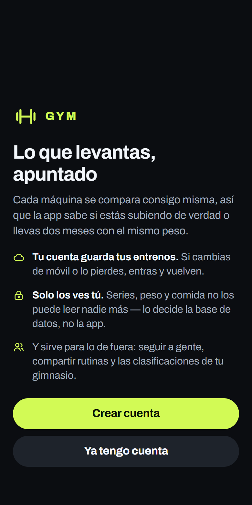
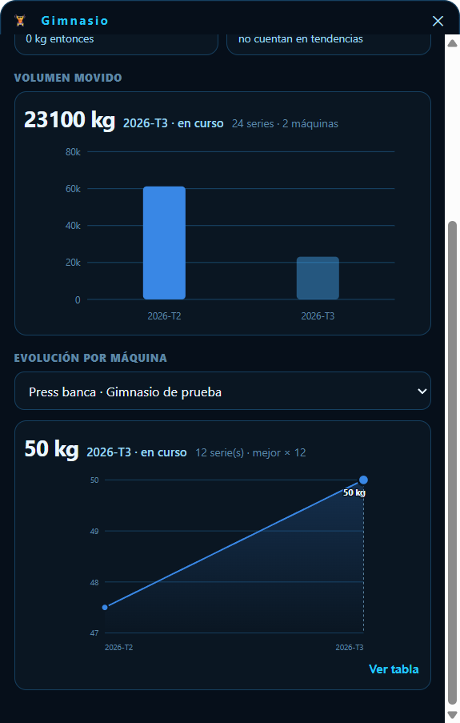
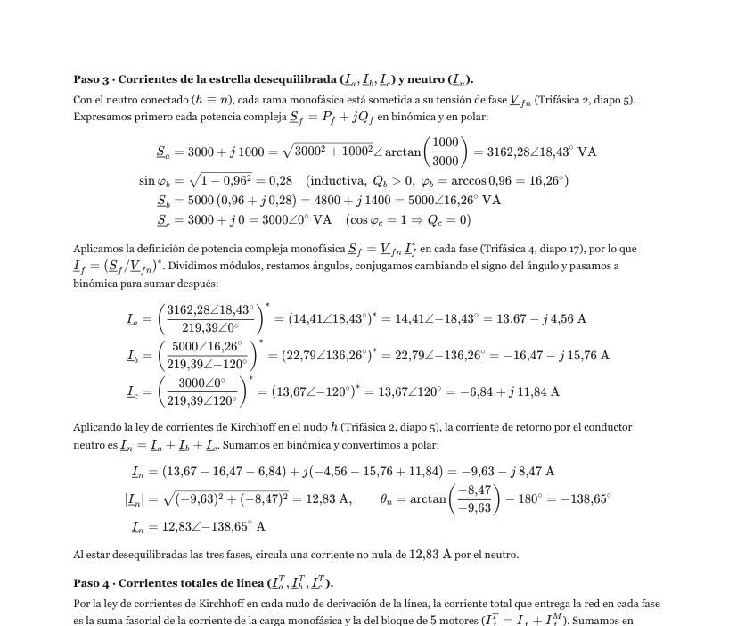
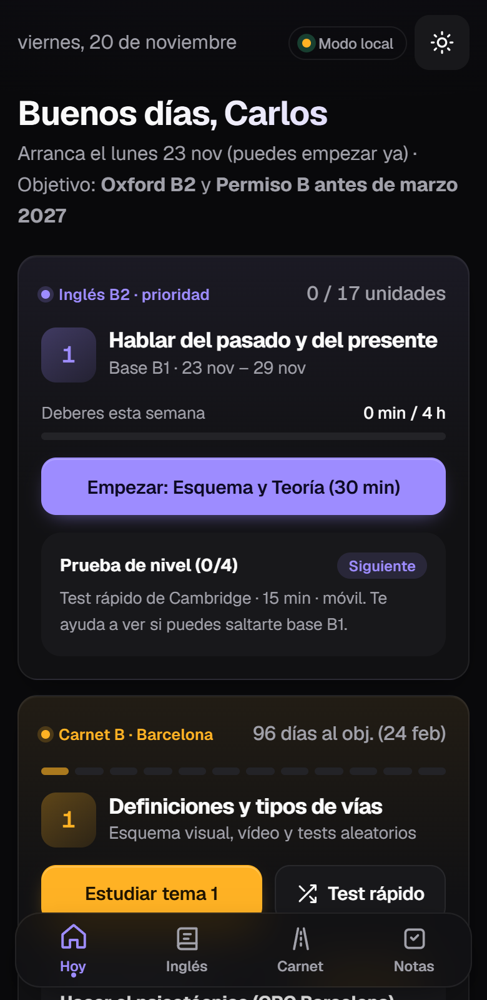

Carlos · proyectos con IA
Estudiante de GETI en la ETSEIB. Proyectos hechos con Claude (Claude Code) desde julio de 2026, cómo está organizado el trabajo y en qué punto está cada uno.
Cómo se trabaja con Claude
Un agente empieza cada sesión sin memoria. Esto es lo que se ha ido montando para que retome el trabajo, no repita errores y no haga cosas que no debe.
Cada sesión
- Lee las instrucciones comunes y las del proyecto
- Lee solo el «estado actual» y la última entrada del log
git logde los últimos 8 cambios
- Busca lo concreto, no explora todo
- Antes de tocar algo que ya falló, lee el registro de errores
- Sigue las reglas del proyecto
- Prueba en la app real con datos reales
- Tests, linter propio, emulador
- PDF revisados como imagen
- Actualiza el estado (máx. 25 líneas)
- Entrada en el log y error nuevo si lo hubo
- Commit explicando qué cambió y qué se probó
Cómo están organizados los ficheros
Qué puede hacer y qué no
| Lo hace solo | Pregunta antes | No lo hace |
|---|---|---|
| Instalar, compilar, ejecutar y probar Commits en cada cambio Descargar material ya autorizado | Borrar algo que no ha mirado Publicar o enviar algo Usar subagentes u otro modelo | Contraseñas, códigos 2FA, datos bancarios Crear cuentas Gastos recurrentes |
Otras piezas
- Memoria: una nota por regla, con el motivo y cómo aplicarla. Unas 50 en el proyecto de la carrera.
- Skills: sincronizar el campus virtual, repasar la clase del día, formularios, repaso semanal, calendario, delegar en Gemini.
- Gemini: para tareas largas, en una copia aparte del proyecto y con un hook que le impide borrar.
- Contexto: herramientas y plugins desactivados en los proyectos donde no se usan.
Proyectos
Del primero al más reciente. Cada uno salió mejor que el anterior porque se arrastraban los errores ya apuntados.
1 · Jarvis
julio 2026 · el primeroAsistente de voz para el ordenador, hecho sobre todo para aprender y ver hasta dónde llegaban la tarjeta gráfica y los modelos locales. Sin experiencia previa: muchos errores, mucho código tirado y la mayoría de las reglas que se usan ahora salieron de aquí.
Python · Whisper · modelos locales (Ollama)
Entre medias, en verano, un proyecto pequeño para aprender algo de electrónica (no está en GitHub).
2 · App del gimnasio
julio–septiembre 2026 · en pausa · v0.37Para apuntar el peso de cada máquina y ver si se progresa o no. Luego se añadieron nutrición, planificador, mapa de gimnasios y cuentas en la nube. 37 versiones, cada una a partir de usarla de verdad en el gimnasio.


Abrir la app en el navegador (empieza vacía)
- Un fallo del buscador volvía en cada versión; se resolvió cambiando de enfoque y probándolo fuera de la app.
- Revisión de licencias antes de usar datos de terceros.
- Pausada al empezar el curso.
JavaScript · Android · Supabase · Cloudflare
3 · La carrera
septiembre 2026 · en uso diarioClaude tiene acceso configurado a Atenea (el campus virtual) y descarga y ordena el material de las seis asignaturas. El login y el 2FA los pone siempre Carlos. Con eso delante hace de profesor: repasos de cada clase a partir de los apuntes de la tablet, ejercicios resueltos con el método de la asignatura y formularios para los exámenes.


Claude Code · skills · Python · HTML a PDF
4 · Apps para la calculadora HP Prime
octubre–noviembre 2026 · se usan en los exámenesEn los exámenes dejan usar calculadora programable, pero los programas que circulaban eran muy básicos. Se hicieron de cero, entre Carlos y la IA: interpolación en tablas de vapor y refrigerantes, circuitos, trifásica y un resolvedor de ecuaciones, enseñando los pasos además del resultado. Los compañeros que los han probado los usan.
- Las pruebas se hacen en un escritorio virtual aparte para no interferir con el ratón ni la pantalla de Carlos.
- Se han ido optimizando con cada fallo que aparecía al usarlos.


HP PPL · Python
5 · LEARN, academia personal
noviembre 2026 · en desarrolloPlan de estudio para el inglés (objetivo B2 de Cambridge) y el teórico del carnet de conducir, con unidades, esquemas, señales y tests. Es un proyecto muy reciente, en desarrollo y pendiente de revisión.

HTML/JS · Claude + Gemini